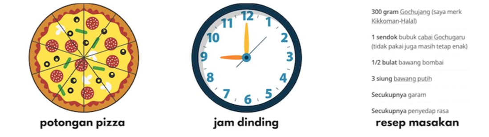
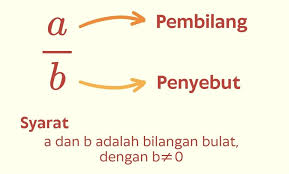
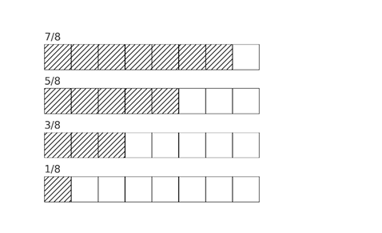

Mengurutkan dan Membandingkan Pecahan
Pengantar

Contoh penggunaan pecahan dalam kehidupan sehari-hari: potongan pizza, jam dinding, resep masakan.
Pecahan adalah konsep matematika yang sering kita temui dalam kehidupan sehari-hari,
meskipun kita mungkin tidak selalu menyadarinya. Pecahan digunakan untuk menyatakan
bagian dari suatu keseluruhan, baik dalam bentuk angka, benda, atau waktu. Berikut
adalah beberapa contoh penggunaan pecahan dalam aktivitas sehari-hari:
- 1. Membagi Makanan:
Ketika kita membagi pizza, kue, atau roti, seringkali kita membaginya menjadi beberapa bagian,
seperti 8 potong, yang masing-masing merupakan pecahan 1/8 dari keseluruhan.
- 2. Waktu Pecahan:
Digunakan untuk menyatakan bagian dari jam atau menit. Misalnya, "1/4 jam" berarti 15 menit,
atau "1/2 jam" berarti 30 menit.
- 3. Resep Masakan:
Dalam memasak, kita sering memakai pecahan untuk menentukan jumlah bahan yang diperlukan.
Contohnya, jika resep untuk 4 orang membutuhkan 1 cangkir gula, maka untuk 2 orang kita hanya
memerlukan 1/2 cangkir gula.
Pecahan memudahkan kita untuk menggambarkan dan menyelesaikan berbagai hal dalam kehidupan
dengan cara yang lebih terstruktur dan praktis.
Pengertian Pecahan
Pecahan adalah hasil dari pembagian antara bilangan bulat dan bilangan asli.
Dalam pecahan, bilangan yang dibagi disebut pembilang,
sedangkan bilangan yang digunakan untuk membagi disebut penyebut.
Biasanya, nilai pembilang lebih kecil daripada nilai penyebut, bentuk ini disebut
pecahan biasa.

Gambar menunjukkan bagian pembilang dan penyebut dalam pecahan
Contoh Soal Mengurutkan
Urutkan pecahan berikut dari yang terbesar ke terkecil:
Cara Mengerjakan
Penyebut sama → bandingkan pembilang:
7 > 5 > 3 > 1
Jadi:
78 >
58 >
38 >
18

Gambar menunjukkan perbandingan bagian pecahan 7—8, 5—8, 3—8, dan 1—8.
Contoh Soal Membandingkan
58
dan
712
bandingkan hasilnya
Penyelesaian:
Samakan penyebut:
Kelipatan 8 dan 12 = 24
58 =
1524
712 =
1424
Bandingkan pembilang:
1524 >
1424
Tulis hasil perbandingan:
58 >
712
Lembar Kerja Interaktif (LKPD1)
Isilah urutan pecahan sesuai perintah. Gunakan tanda “/” untuk menjawab (misalnya: 1/3, 2/3, 3/3).
Lembar Kerja Interaktif (LKPD2)
Bandingkan pecahan dari gambar berikut dengan mengisi tanda "<" atau ">" pada kotak kosong di bawahnya.
Lembar Kerja Interaktif (LKPD3)
Di pesta ulang tahun, ada tiga buah kue yang dipotong menjadi bagian yang berbeda-beda.
Kue pertama dipotong menjadi 4 bagian sama besar, kue kedua menjadi 8 bagian sama besar,
dan kue ketiga menjadi 16 bagian sama besar.
Jika kamu ingin mengambil potongan kue yang paling besar, mana yang kamu pilih? Jelaskan alasannya!
← Kembali ke Beranda